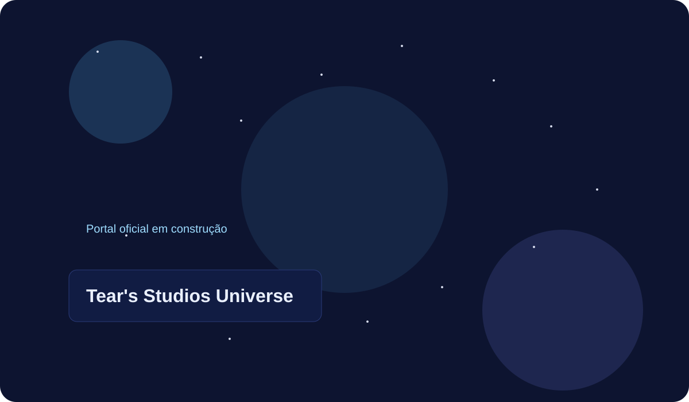

Contatos
0
Site oficial em evolução contínua
Nova etapa do site com navegação multipágina, galeria dedicada e organização de conteúdo por áreas.

Contatos
0
Sugestões
0
Solicitações
0
Eventos
0
Notificações
0
Artigos CMS
0
Aegis, Lyra e Nox com artes de exemplo.
Roadmap e fases do projeto geral.
Eventos, eras e marcos narrativos.
Coleção de artes e materiais visuais.
Princípios e objetivos do TSU.
Atualizações e comunicados oficiais do projeto.
Métricas de navegação e interação do portal.
Acesso com Google e gestão do tipo de usuário.
Resumo operacional de solicitações e mensagens.
Gestão editorial de conteúdo e triagem da comunidade.
Canal para envio de conteúdo oficial.
Status: Concluída.
Status: Concluída.
Status: Concluída.
Status: Em implementação nesta fase.
Status: Planejado (sequência).
Status: Planejado (sequência).
Status: Planejado (sequência).